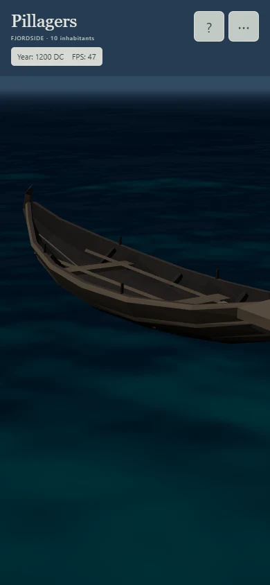
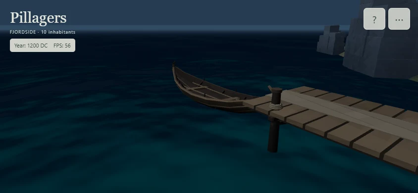

Fjordside water and boat
Approved ReferenceWater defaults, the original faering, and native production lighting. Use the three boat times to inspect heave, pitch and roll beside the pier. These are still frames; open the preview to assess motion. Source placement and heading are preserved.
QA report and limits · Capture settings and costs · Source hashes · Geometric clearance
One opaque water draw, with no actual house/tree/boat reflections, seabed refraction, depth mask or shoreline foam. Near-water geometric waves fade into a sparse horizon skirt. Quality changes preserve the live clock and geography; ground maps retain their scene-load tier.
Mobile layout


Touch drag, pinch, Pause and live quality were tested. These images and host readouts are not phone performance evidence.